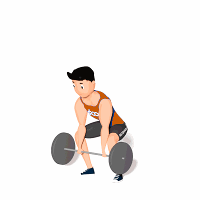

Sumô Deadlift High Pull

Esse exercício fortalece principalmente os isquiotibiais, os glúteos, a parte inferior das costas.
Ficha Técnica
Tipo: CrossFit
Grupo Muscular: Corpo
Aparelho: Nenhum
Músculos: Nenhum
Como realizar
- Pés mais abertos que os ombros;
- A barra é segurada no centro;
- Iniciar o movimento fazendo a extensão dos joelhos e quadris;
- Realizar puxada alta, com os cotovelos pra cima e pra fora;
- A barra deve chegar na altura da clavícula;
- Manter a lombar em posição neutra durante o movimento;
- O movimento termina com a barra na altura da clavícula.
 RC STORE
RC STORE